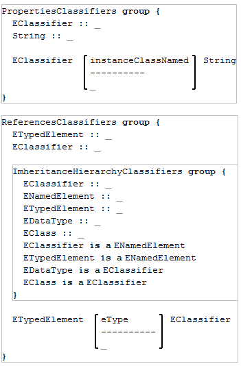

Ecore
Ecore main group
The main 'Ecore' group is reusing several other groups:

Kernel group
The 'Kernel' group is made of two other groups: 'PropertiesKernel' and 'ReferencesKernel', describing the properties of the classes in the 'Kernel' group and the references of the classes in the 'Kernel' group, respectively.
The 'PropertiesKernel' subgroup of 'Kernel':

The 'ReferencesKernel' subgroup of 'Kernel':
Structural features group
The 'StructuralFeatures' group is made of four other groups: 'PropertiesStructuralFeatures', 'ReferencesStructuralFeatures', 'Attributes', and 'References', describing the properties of the classes in the 'StructuralFeatures' group, the references of the classes in the 'StructuralFeatures' group, the attribute variety of structural feature and the reference variety of structural feature, respectively.
The 'PropertiesStructuralFeatures' subgroup of 'StructuralFeatures':
The 'ReferencesStructuralFeatures' group contains a subgroup that models the inheritance hierarchy, named 'InheritanceHierarchyStructuralFeatures'.
The 'ReferencesStructuralFeatures' subgroup of 'StructuralFeatures':
The 'Attributes' group is made of two other groups: 'PropertiesAttributes' and 'ReferencesAttributes', describing the properties of the classes in the 'Attributes' group and the references of the classes in the 'Attributes' group, respectively.
The 'Attributes' subgroup of 'StructuralFeatures':

The 'References' group is made of two other groups: 'PropertiesReferences' and 'ReferencesReferences', describing the properties of the classes in the 'References' group and the references of the classes in the 'References' group, respectively.
The 'References' subgroup of 'StructuralFeatures':

Behavioral features group
The 'BehavioralFeatures' group is made of one group, 'ReferencesBehavioralFeatures', describing the references of the classes in the 'BehavioralFeatures' group. The inheritance hierarchy of the classes are described in the 'InheritanceHierarchyBehavioralFeatures' subgroup of 'ReferencesBehavioralFeatures'.
The 'BehavioralFeatures' group:
Classifiers group
The 'Classifiers' group is made of four other groups: 'PropertiesClassifiers', 'ReferencesClassifiers', 'Classes' and 'DataTypes', describing the properties of the classes in the 'Classifiers' group, the references of the classes in the 'Classifiers' group, the class variety of classifier and the data type variety of classifier.
The 'ReferencesClassifiers' group contains a subgroup describing the inheritance hierarchy of the classes, 'InheritanceHierarchyClassifiers'.
The 'PropertiesClassifiers' and 'ReferencesClassifiers' subgroups of 'Classifiers':

The 'Classes' group is made of two other groups: 'PropertiesClasses' and 'ReferencesClasses', describing the properties of the classes in the 'Classes' group and the references of the classes in the 'Classes' group, respectively.
The 'Classes' subgroup of 'Classifiers':
The 'DataTypes' group is made of two other groups: 'PropertiesDataTypes' and 'ReferencesDataTypes', describing the properties of the classes in the 'DataTypes' group and the references of the classes in the 'DataTypes' group, respectively.
The 'DataTypes' subgroup of 'Classifiers':
Annotations group
The 'Annotations' group is made of two other groups: 'PropertiesAnnotations' and 'ReferencesAnnotations', describing the properties of the classes in the 'Annotations' group and the references of the classes in the 'Annotations' group, respectively.
The 'Annotations' group:
Packages and factories group
The 'PackagesAndFactories' group is made of two other groups: 'PropertiesPackagesAndFactories' and 'ReferencesPackagesAndFactories', describing the properties of the classes in the 'PackagesAndFactories' group and the references of the classes in the 'PackagesAndFactories' group, respectively. The inheritance hierarchy of the classes is described in the 'InheritanceHierarchyPackagesAndFactories' subgroup of 'ReferencesPackagesAndFactories'.
The 'PackagesAndFactories' group: